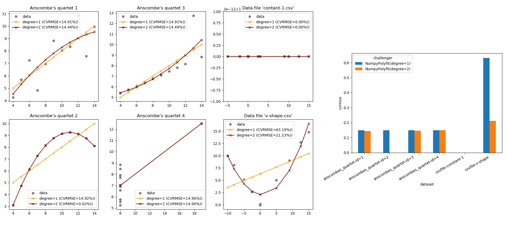

pytest-cases¶
Separate test code from test cases in pytest.


Brand new v2, check the changes !
Installing pytest-cases has effects on the order of pytest tests execution. Details here
Did you ever think that most of your test functions were actually the same test code, but with different data inputs and expected results/exceptions ?
-
pytest-casesleveragespytestand its great@pytest.mark.parametrizedecorator, so that you can separate your test cases from your test functions. -
In addition,
pytest-casesprovides several useful goodies to empowerpytest. In particular it improves the fixture mechanism to support "fixture unions". This is a major change in the internalpytestengine, unlocking many possibilities such as using fixture references as parameter values in a test function. See here.
pytest-cases is fully compliant with pytest-harvest so you can easily monitor the execution times and created artifacts. With it, it becomes very easy to create a complete data science benchmark, for example comparing various models on various datasets as illustrated below (from the example section):

Installing¶
> pip install pytest_cases
Note: Installing pytest-cases has effects on the order of pytest tests execution, even if you do not use its features. One positive side effect is that it fixed pytest#5054. But if you see less desirable ordering please report it.
Why pytest-cases ?¶
pytest philosophy
Let's consider the following foo function under test, located in example.py:
def foo(a, b):
return a + 1, b + 1
If we were using plain pytest to test it with various inputs, we would create a test_foo.py file and use @pytest.mark.parametrize:
import pytest
from example import foo
@pytest.mark.parametrize("a,b", [(1, 2), (-1, -2)])
def test_foo(a, b):
# check that foo runs correctly and that the result is a tuple.
assert isinstance(foo(a, b), tuple)
This is the fastest and most compact thing to do when you have a few number of test cases, that do not require code to generate each test case.
pytest current limitations
Now imagine that instead of (1, 2) and (-1, -2) each of our test cases
- requires a few lines of code to be generated. For example artificial data creation using
numpyand/orpandas:
import numpy as np
import pandas as pd
# case 1: non-sorted uniformly sampled timeseries with 2 holes
case1 = pd.DataFrame({"datetime": pd.date_range(start='20/1/1', periods=20,
freq='-1d', tz='UTC'),
"data1": np.arange(0, 20),
"data2": np.arange(1, 21),
"data3": np.arange(1, 21)})
case1.drop([3, 12], inplace=True)
-
requires documentation to explain the other developers the intent of that precise test case
-
requires external resources (data files on the filesystem, databases...), with a variable number of cases depending on what is available on the resource - but of course not all the cases would come from the same resource, that would be too easy :).
-
requires a readable
id, such as'uniformly_sampled_nonsorted_with_holes'for the above example. Of course we could usepytest.paramorids=<list>but that is "a pain to maintain" according topytestdoc (I agree!). Such a design does not feel right as the id is detached from the case.
With standard pytest there is no particular pattern to simplify your life here. Investigating a little bit, people usually end up trying to mix parameters and fixtures and asking this kind of question: so1, so2. But by design it is not possible to solve this problem using fixtures, because pytest does not handle "unions" of fixtures.
So all in all, the final answer is "you have to do this yourself", and have pytest use your handcrafted list of parameters as the list of argvalues in @pytest.mark.parametrize. Typically we would end up creating a get_all_foo_test_cases function, independently from pytest:
@pytest.mark.parametrize("a,b", get_all_foo_test_cases())
def test_foo(a, b):
...
There is also an example in pytest doc with a metafunc hook.
The issue with such workarounds is that you can do anything. And anything is a bit too much: this does not provide any convention / "good practice" on how to organize test cases, which is an open door to developing ad-hoc unreadable or unmaintainable solutions.
pytest_cases was created to provide an answer to this precise situation. It proposes a simple framework to separate test cases from test functions. The test cases are typically located in a separate "companion" file:
test_foo.pyis your usual test file containing the test functions (namedtest_<id>),test_foo_cases.pycontains the test cases, that are also functions (namedcase_<id>or even<prefix>_<id>if you prefer). Note: an alternate file naming stylecases_foo.pyis also available if you prefer it.

Test cases can also be provided explicitly, for example in a class container:

And many more as we'll see below.
Basic usage¶
a- Case functions¶
Let's create a test_foo_cases.py file. This file will contain test cases generator functions, that we will call case functions for brevity. In these functions, you will typically either parse some test data files, generate some simulated test data, expected results, etc.
def case_two_positive_ints():
""" Inputs are two positive integers """
return 1, 2
def case_two_negative_ints():
""" Inputs are two negative integers """
return -1, -2
Case functions do not have any particular requirement, apart from the default name convention case_<id> - but even that can be customized: you can use distinct prefixes to denote distinct kind of parameters, such as data_<id>, user_<id>, model_<id>...
Case functions can return anything that is considered useful to run the associated test. We will see below that you can use all classic pytest mechanism on case functions (id customization, skip/fail marks, parametrization, fixtures injection).
b- Test functions¶
As usual we write our pytest test functions starting with test_, in a test_foo.py file. The only difference is that we now decorate it with @parametrize_with_cases instead of @pytest.mark.parametrize as we were doing previously:
from example import foo
from pytest_cases import parametrize_with_cases
@parametrize_with_cases("a,b")
def test_foo(a, b):
# check that foo runs correctly and that the result is a tuple.
assert isinstance(foo(a, b), tuple)
As simple as that ! The syntax is basically the same than in pytest.mark.parametrize.
Executing pytest will now run our test function once for every case function:
>>> pytest -s -v
============================= test session starts =============================
(...)
<your_project>/tests/test_foo.py::test_foo[two_positive_ints] PASSED [ 50%]
<your_project>/tests/test_foo.py::test_foo[two_negative_ints] PASSED [ 100%]
========================== 2 passed in 0.24 seconds ==========================
Tools for daily use¶
a- Cases collection¶
Alternate source(s)¶
It is not mandatory that case functions should be in a different file than the test functions: both can be in the same file. For this you can use cases='.' or cases=THIS_MODULE to refer to the module in which the test function is located:
from pytest_cases import parametrize_with_cases
def case_one_positive_int():
return 1
def case_one_negative_int():
return -1
@parametrize_with_cases("i", cases='.')
def test_with_this_module(i):
assert i == int(i)
However WARNING: only the case functions defined BEFORE the test function in the module file will be taken into account!
@parametrize_with_cases(cases=...) also accepts explicit list of case functions, classes containing case functions, and modules. See API Reference for details. A typical way to organize cases is to use classes for example:
from pytest_cases import parametrize_with_cases
class Foo:
def case_a_positive_int(self):
return 1
def case_another_positive_int(self):
return 2
@parametrize_with_cases("a", cases=Foo)
def test_foo(a):
assert a > 0
Note that as for pytest, self is recreated for every test and therefore should not be used to store any useful information.
Alternate prefix¶
case_ might not be your preferred prefix, especially if you wish to store in the same module or class various kind of case data. @parametrize_with_cases offers a prefix=... argument to select an alternate prefix for your case functions. That way, you can store in the same module or class case functions as diverse as datasets (e.g. data_), user descriptions (e.g. user_), algorithms or machine learning models (e.g. model_ or algo_), etc.
from pytest_cases import parametrize_with_cases, parametrize
def data_a():
return 'a'
@parametrize("hello", [True, False])
def data_b(hello):
return "hello" if hello else "world"
def case_c():
return dict(name="hi i'm not used")
def user_bob():
return "bob"
@parametrize_with_cases("data", cases='.', prefix="data_")
@parametrize_with_cases("user", cases='.', prefix="user_")
def test_with_data(data, user):
assert data in ('a', "hello", "world")
assert user == 'bob'
yields
test_doc_filters_n_tags.py::test_with_data[bob-a] PASSED [ 33%]
test_doc_filters_n_tags.py::test_with_data[bob-b-True] PASSED [ 66%]
test_doc_filters_n_tags.py::test_with_data[bob-b-False] PASSED [ 100%]
Filters and tags¶
The easiest way to select only a subset of case functions in a module or a class, is to specify a custom prefix instead of the default one ('case_'), as shown above.
However sometimes more advanced filtering is required. In that case, you can also rely on three additional mechanisms provided in @parametrize_with_cases:
- the
globargument can contain a glob-like pattern for case ids. This can become handy to separate for example good or bad cases, the latter returning an expected error type and/or message for use withpytest.raisesor with our alternativeassert_exception.
from math import sqrt
import pytest
from pytest_cases import parametrize_with_cases
def case_int_success():
return 1
def case_negative_int_failure():
# note that we decide to return the expected type of failure to check it
return -1, ValueError, "math domain error"
@parametrize_with_cases("data", cases='.', glob="*success")
def test_good_datasets(data):
assert sqrt(data) > 0
@parametrize_with_cases("data, err_type, err_msg", cases='.', glob="*failure")
def test_bad_datasets(data, err_type, err_msg):
with pytest.raises(err_type, match=err_msg):
sqrt(data)
- the
has_tagargument allows you to filter cases based on tags set on case functions using the@casedecorator. See API reference of@caseand@parametrize_with_cases.
from pytest_cases import parametrize_with_cases, case
class FooCases:
def case_two_positive_ints(self):
return 1, 2
@case(tags='foo')
def case_one_positive_int(self):
return 1
@parametrize_with_cases("a", cases=FooCases, has_tag='foo')
def test_foo(a):
assert a > 0
- Finally if none of the above matches your expectations, you can provide a callable to
filter. This callable will receive each collected case function and should returnTrue(or a truth-value convertible object) in case of success. Note that your function can leverage the_pytestcaseattribute available on the case function to read the tags, marks and id found on it.
@parametrize_with_cases("data", cases='.',
filter=lambda cf: "success" in cf._pytestcase.id)
def test_good_datasets2(data):
assert sqrt(data) > 0
b- Case functions¶
Custom case name¶
The id used by pytest for a given case is automatically taken from the case function name by removing the case_ (or other custom) prefix. It can instead be customized explicitly by decorating your case function with the @case(id=<id>) decorator. See API reference.
from pytest_cases import case
@case(id="2 positive integers")
def case_two_positive_ints():
return 1, 2
Pytest marks (skip, xfail...)¶
pytest marks such as @pytest.mark.skipif can be applied on case functions the same way as with test functions.
import sys
import pytest
@pytest.mark.skipif(sys.version_info < (3, 0), reason="Not useful on python 2")
def case_two_positive_ints():
return 1, 2
Case generators¶
In many real-world usage we want to generate one test case per <something>. The most intuitive way would be to use a for loop to create the case functions, and to use the @case decorator to set their names ; however this would not be very readable.
Instead, case functions can be parametrized the same way as with test functions: simply add the parameter names as arguments in their signature and decorate with @pytest.mark.parametrize. Even better, you can use the enhanced @parametrize from pytest-cases so as to benefit from its additional usability features (see API reference):
from pytest_cases import parametrize, parametrize_with_cases
class CasesFoo:
def case_hello(self):
return "hello world"
@parametrize(who=('you', 'there'))
def case_simple_generator(self, who):
return "hello %s" % who
@parametrize_with_cases("msg", cases=CasesFoo)
def test_foo(msg):
assert isinstance(msg, str) and msg.startswith("hello")
Yields
test_generators.py::test_foo[hello] PASSED [ 33%]
test_generators.py::test_foo[simple_generator-who=you] PASSED [ 66%]
test_generators.py::test_foo[simple_generator-who=there] PASSED [100%]
Cases requiring fixtures¶
Cases can use fixtures the same way as test functions do: simply add the fixture names as arguments in their signature and make sure the fixture exists either in the same module, or in a conftest.py file in one of the parent packages. See pytest documentation on sharing fixtures.
Use @fixture instead of @pytest.fixture
If a fixture is used by some of your cases only, then you should use the @fixture decorator from pytest-cases instead of the standard @pytest.fixture. Otherwise you fixture will be setup/teardown for all cases even those not requiring it. See @fixture doc.
from pytest_cases import parametrize_with_cases, fixture, parametrize
@fixture(scope='session')
def db():
return {0: 'louise', 1: 'bob'}
def user_bob(db):
return db[1]
@parametrize(id=range(2))
def user_from_db(db, id):
return db[id]
@parametrize_with_cases("a", cases='.', prefix='user_')
def test_users(a, db, request):
print("this is test %r" % request.node.nodeid)
assert a in db.values()
yields
test_fixtures.py::test_users[a_is_bob]
test_fixtures.py::test_users[a_is_from_db-id=0]
test_fixtures.py::test_users[a_is_from_db-id=1]
Advanced topics¶
a- Test fixtures¶
In some scenarii you might wish to parametrize a fixture with the cases, rather than the test function. For example
-
to inject the same test cases in several test functions without duplicating the
@parametrize_with_casesdecorator on each of them, -
to generate the test cases once for the whole session, using a
scope='session'fixture or another scope, -
to modify the test cases, log some message, or perform some other action before injecting them into the test functions, and/or after executing the test function (thanks to yield fixtures)
-
...
For this, simply use @fixture from pytest_cases instead of @pytest.fixture to define your fixture. That allows your fixtures to be easily parametrized with @parametrize_with_cases, @parametrize, and even @pytest.mark.parametrize.
from pytest_cases import fixture, parametrize_with_cases
@fixture
@parametrize_with_cases("a,b")
def c(a, b):
return a + b
def test_foo(c):
assert isinstance(c, int)
b- Caching cases¶
After starting to reuse cases in several test functions, you might end-up thinking "why do I have to spend the data parsing/generation time several times ? It is the same case.". There are several ways to solve this issue:
- the easiest way is to use fixtures with a broad scope, as explained above. However in some parametrization scenarii,
pytestdoes not guarantee that the fixture will be setup only once for the whole session, even if it is a session-scoped fixture. Also the cases will be parsed everytime you run pytest, which might be cumbersome
from pytest_cases import parametrize, parametrize_with_cases, fixture
@parametrize(a=range(2))
def case_dummy(a):
# this is read only once per a, while there are 4 test runs
return a
@fixture(scope='session')
@parametrize_with_cases("a", cases='.')
def cached_a(a):
return a
@parametrize(d=range(2))
def test_caching(cached_a, d):
assert d < 2
assert 0 <= cached_a <= 1
-
an alternative is to use
functools.lru_cacheto explicitly set a memory cache on a case function. For simple cases you could simply decorate your case function with@lru_cache(maxsize=1)since simple case functions do not have arguments. However for case generators this is a bit more tricky to size the cache - the easiest thing is probably to let it to its default size of 128 with the no-argument version@lru_cache, or to remove the max limit and let it auto-grow, with@lru_cache(max_size=None). Seelru_cachedocumentation for details. Note that an older version ofpytest-caseswas offering some facilities to set the cache size, this has been removed from the library in version2.0.0as it seemed to provide little added value. -
finally, you might wish to persist some cases on disk in order for example to avoid downloading them again from their original source, and/or to avoid costly processing on every pytest session. For this, the perfect match for you is to use
joblib's excellentMemorycache.
Main features / benefits¶
-
Separation of concerns: test code on one hand, test cases data on the other hand. This is particularly relevant for data science projects where a lot of test datasets are used on the same block of test code.
-
Everything in the test case or in the fixture, not outside. A side-effect of
@pytest.mark.parametrizeis that users tend to create or parse their datasets outside of the test function.pytest_casessuggests a model where the potentially time and memory consuming step of case data generation/retrieval is performed inside the test node or the required fixture, thus keeping every test case run more independent. It is also easy to put debug breakpoints on specific test cases. -
User experience fully aligned with pytest. Cases collection and filtering, cases parametrization, cases output unpacking as test arguments, cases using fixtures... all of this will look very familiar to
pytestusers.
See Also¶
- pytest documentation on parametrize
- pytest documentation on fixtures
- pytest-steps
- pytest-harvest
- pytest-patterns for examples showing how to combine the various plugins to create data science benchmarks.
Others¶
Do you like this library ? You might also like my other python libraries
Want to contribute ?¶
Details on the github page: https://github.com/smarie/python-pytest-cases